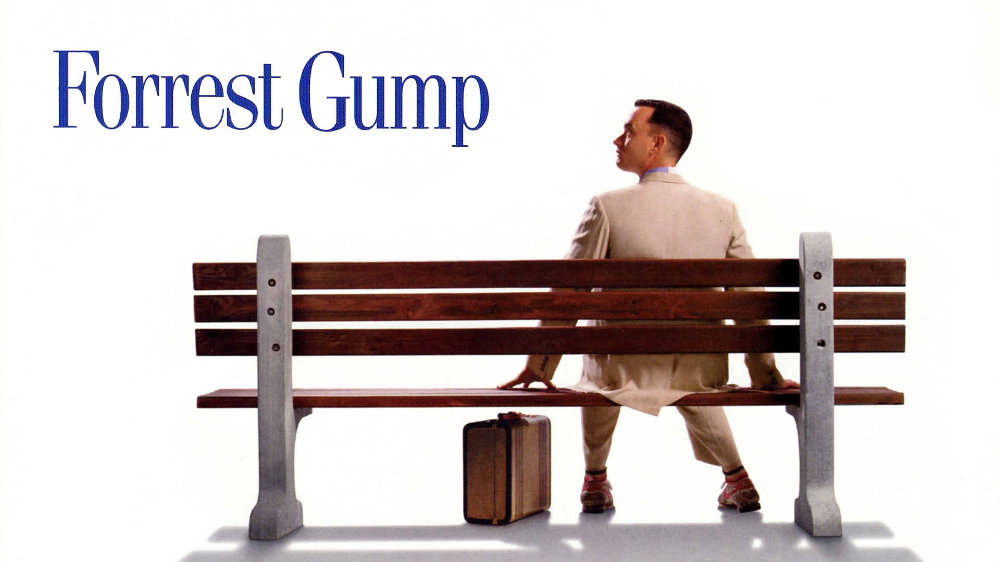
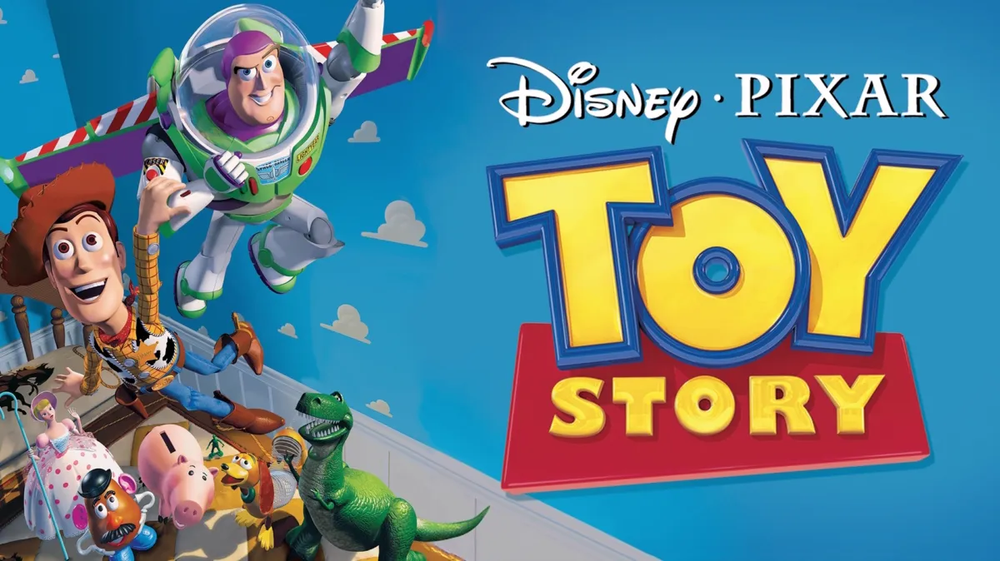
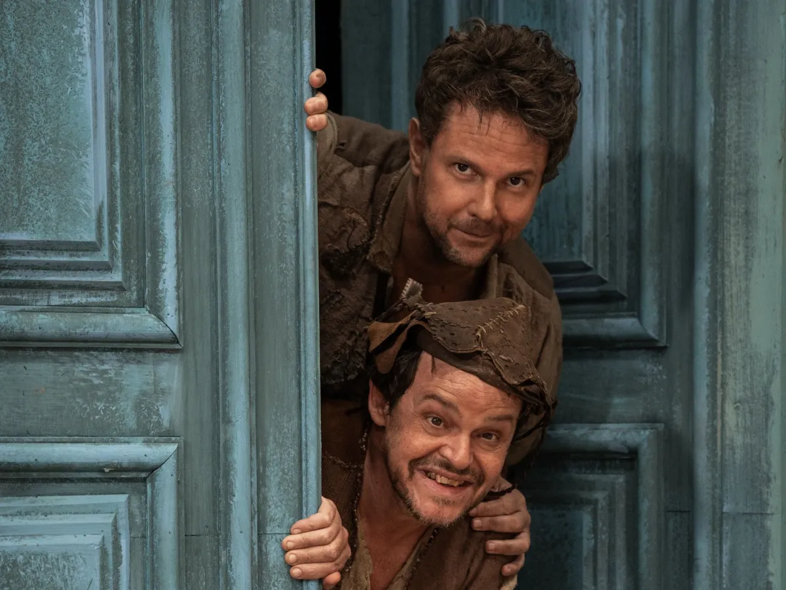
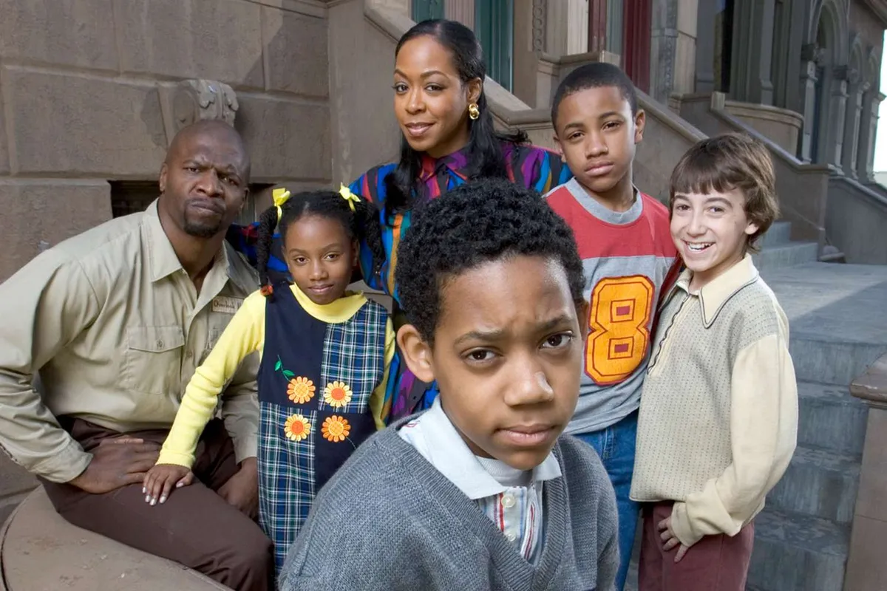
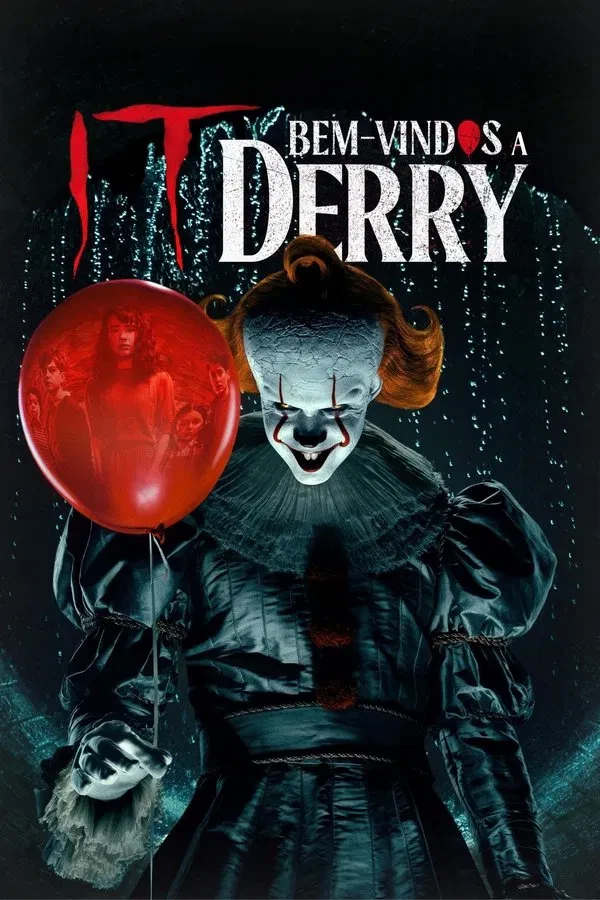
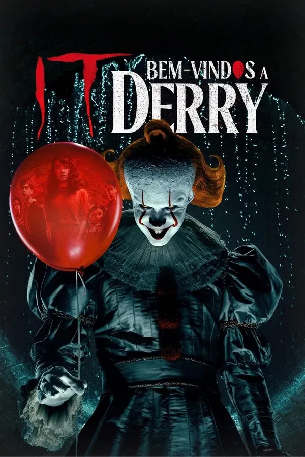

Aqui você econtra algumas sugestões de filmes, séries e animes para assistir nos momentos de lazer ou quando bater aquele tédio. 😉
Assistir filmes é uma ótima forma de passar o tempo e se divertir, além de ser uma atividade que possa ser realizada sozinho ou na companhia de outras pessoas.
Existe uma variada gama de filmes, para todos os gostos e estilos, os genêros podem variar entre humor, ação, aventura, terror, drama, animação, ficção entre outros.
- BASTARDOS INGLÓRIOS
Sinopse: Em Bastardos Inglórios, na Segunda Guerra Mundial, a França está ocupada pelos nazistas.
O tenente Aldo Raine (Brad Pitt) é o encarregado de reunir um pelotão de soldados de origem judaica, com o objetivo de realizar uma missão suicida contra os alemães.
O objetivo é matar o maior número possível de nazistas, da forma mais cruel possível.
Paralelamente Shosanna Dreyfuss (Mélanie Laurent) assiste a execução de sua família pelas mãos do coronel Hans Landa (Christoph Waltz),
o que faz com que fuja para Paris. Lá ela se disfarça como operadora e dona de um cinema local, enquanto planeja um meio de se vingar.
Genêro: Ação, guerra, aventura, drama
Classificação indicativa: 18 anos ou mais
Data de lançamento: 9 de outubro de 2009(Brasil)
Diretor: Quentin Tarantino
Duração: 2h 33min
Trailer
Onde assistir:
- FORREST GUMP- O CONTADOR DE HISTÓRIAS

Sinopse: Quarenta anos da história dos Estados Unidos, vistos pelos olhos de Forrest Gump (Tom Hanks), um rapaz com QI abaixo da média e boas intenções.
Por obra do acaso, ele consegue participar de momentos cruciais, como a Guerra do Vietnã e Watergate, mas continua pensando no seu amor de infância, Jenny Curran.
Genêro: Comédia, drama, romance
Classificação indicativa: 14 anos ou mais
Data de lançamento: 7 de dezembro de 1994(Brasil)
Diretor: Robert Zemeckis
Duração: 2h 22min
Trailer
Onde assistir:

- O PODEROSO CHEFÃO
Sinopse: Uma família mafiosa luta para estabelecer sua supremacia nos Estados Unidos depois da Segunda Guerra Mundial. Uma tentativa de assassinato deixa o chefão Vito Corleone incapacitado e força os filhos Michael e Sonny a assumir os negócios.
Genêro: Crime, gângster, drama, tragédia
Classificação indicativa: 14 anos ou mais
Data de lançamento: 7 de julho de 1972 (Brasil)
Diretor: Francis Ford Coppola
Duração: 2 h 55 min
Trailer
Onde assistir:
- TOY STORY

Sinopse: O aniversário do garoto Andy está chegando e seus brinquedos ficam nervosos, temendo que ele ganhe novos brinquedos que possam substituí-los.
Liderados pelo caubói Woody, o brinquedo predileto de Andy, eles recebem Buzz Lightyear, o boneco de um patrulheiro espacial, que logo passa a receber mais atenção do garoto.
Com ciúmes, Woody tenta ensiná-lo uma lição, mas Buzz cai pela janela. É o início da aventura do caubói, que precisa resgatar Buzz para limpar sua barra com os outros brinquedos.
Genêro: Comédia, animação, aventura, família
Classificação indicativa: Livre
Data de lançamento: 22 de dezembro de 1995 (Brasil)
Diretor: John Lasseter
Duração: 1h 21m
Trailer
Onde assistir:
- O AUTO DA COMPADECIDA

Sinopse: No Brasil, dois nordestinos pobres e espertos vivem de enganar pessoas para sobreviver.
Quando conhecem uma moça rica, eles têm esperança de se darem bem, mas seus planos são interrompidos pela chegada de um bandido forasteiro.
Genêro: Sátira, comédia, drama, fantasia
Classificação indicativa: Livre
Data de lançamento: 10 de setembro de 2000 (Brasil)
Diretor: Guel Arraes
Duração: 1h 44m
Trailer
Onde assistir:
As séries em geral são tão inrcivéis quanto os filmes, existe genêro para todos os gostos. Contudo, são mais aprofundadas, contendo mais conteudo que os filmes,
o que acaba exigindo um tempo de disposição maior, para poder acompanhar muitos episódios.
Aqui vai uma lista com algumas séries interessantes, para você assistir sozinho ou com companhia:
- BREAKING BAD

Sinopse: Walter White, um professor de química com câncer terminal que, para garantir o futuro financeiro de sua família,
se une ao ex-aluno Jesse Pinkman para fabricar e vender metanfetamina de alta pureza, transformando-se no perigoso chefão do crime "Heisenberg" e mergulhando em um mundo de violência
e moralidade questionável, enquanto lida com sua família e a Agência Antidrogas dos EUA(DEA), onde seu cunhado Hank trabalha.
Genêro: Crime, drogas, tragédia, drama, suspense
Classificação indicativa: 16 anos ou mais
Temporadas: 5
Onde assistir:
- STRANGER THINGS

Sinopse: Trata-se de uma série ambientada nos anos 1980 em Hawkins, Indiana, que mistura ficção científica, terror e nostalgia,
começando com o misterioso desaparecimento de Will Byers, que leva seus amigos, a mãe de Will e o xerife Hopper a descobrir segredos sobrenaturais,
uma dimensão paralela (Mundo Invertido), experimentos governamentais secretos e uma garota com poderes telecinéticos chamada Eleven (Onze).
A série explora a luta contra monstros do Mundo Invertido, como o Demogorgon e Vecna, que se conectam à cidade através de portais, enquanto os personagens crescem,
enfrentam traumas e lidam com os perigos que ameaçam Hawkins e o mundo, tudo isso recheado de referências à cultura pop dos anos 80.
Genêro: Ficção científica, drama, fantasia, sobrenatural, suspense
Classificação indicativa: 16 anos ou mais
Temporadas: 5
Onde assistir:
- HOW I MET YOUR MOTHER

Sinopse: Trata-se uma sitcom sobre Ted Mosby, um arquiteto em Nova York, que narra a seus filhos, anos depois, a longa e engraçada jornada de como conheceu a mãe deles,
acompanhado por seus amigos Marshall, Lily, Barney e Robin, explorando relacionamentos, amizades e os desafios da vida adulta em Manhattan, com o mistério central sendo a identidade da "Mãe"
e os altos e baixos amorosos de Ted, especialmente seu complicado relacionamento com Robin.
Genêro: Sitcom, comédia, drama, romance
Classificação indicativa: 12 anos ou mais
Temporadas: 9
Onde assistir:
- IT: BEM-VINDOS A DERRY
Sinopse: A série é um prelúdio dos filmes de It - A Coisa, que mergulha nos eventos que antecedem a história da famosa obra de Stephen King.
Ambientada na década de 1960, a série retorna à cidade de Derry, onde o temido palhaço Pennywise continua a aterrorizar os habitantes.
Genêro: Terror, fantasia, sobrenatural
Classificação indicativa: 16 anos ou mais
Temporadas: 1
Onde assistir:

- TODO MUNDO ODEIA O CHRIS

Sinopse: É uma série de comédia baseada na adolescência do comediante Chris Rock, ambientada nos anos 80 no Brooklyn, Nova York,
narrando as hilárias e comoventes situações de um jovem negro que enfrenta os desafios de uma escola majoritariamente branca, uma família trabalhadora e os perrengues do dia a dia,
sempre com um toque de humor e comédia de situações.
Genêro: Sitcom, comédia, drama
Classificação indicativa: 10 anos ou mais
Temporadas: 4
Onde assistir:
Os animes, já são pra quem curte mais animação. Geralmente baseados em mangás, possuem histórias e narrativas incriveis, que predem o espectador até o final.
Abaixo segue algumas indicações de animes, que com certeza você não vai se arrepender de assistir:
 
